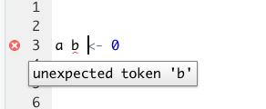

Chapter 5 Workflows for R Coding
In the previous chapter, we conducted our coding in the console, which quickly became unwieldy. To address this, we will transition to using R Markdown .Rmd files, which we briefly talked about in A Sneak Peek at .Rmd Files. Instead of running code interactively in the console, we write code blocks within the ‘.rmd’ files, creating a comprehensive document that others can follow.
5.1 Creating or opening an R Markdown document
To start an R Markdown document:
- Go to File -> New File -> R Markdown
- Then save your document by going to File -> Save As….
- Make sure to save your file with the
.Rmdsuffix. - Save your ‘.rmd’ file in your project folder, so you can easily call data files.
We’ve also provided an example script in the R4EnvChem project template. Assuming you’re currently in the template project you can open the script as follows:
- Go to
File->Open File-> open theRscript-example.Rmdfile or double click theRscript-example.Rmdin the files pane. This action will open a new pane above the console, dedicated to writing your R Markdown content.
5.2 Workspace and What’s Real
We’ve already mentioned the environment pane that displays objects present in your R session. While they are useful to work with, they’re not considered real. That is to say, if you close your R session, those objects will be lost. And while RStudio allows you to save a working environment (and its associated objects), it’s crucial to understand that only your saved scripts/markdown documents are real. You can’t readily share your working environment, and even so it’s bad practice as you may reference a previous iteration of an object giving you erroneous results. Think back to the chemistry labs: you may jot notes down on loose leaf, but only what’s written in your lab book is considered real… well that’s how it’s supposed to work anyways.
The idea is everything you need can be generated from the original data and the instructions in your R script/markdown document. Anyone should be able to take your data and your code and get the same results you got. This is paramount for the reproducibility of your work and your results.
5.3 Saving R Markdown
To save an R Markdown document:
- Navigate to File -> Save or use the ‘Save’ icon in the top left corner of your document.
Content saved to an .Rmd file is considered real and self-contained. Variables, plots, or datasets that appear in your workspace or the Environment window aren’t self-contained. Whenever you close RStudio, any objects in R that are not considered real will be lost in that R session. Furthermore when you need to share your code (for school or publication) you’ll need to share your data and your script, but never your work-space. This is to increase predictability and helps people (and you) to make sure your work is reproducible, an underappreciated hallmark of science.
5.3.1 What Should I Save?
At this point in the chapter, two things should be clear:
- R Markdown documents saved to
.Rmdfiles are the real record of your work. - Objects in your work-space/environment are not real, and will not be available to you after you close and re-open RStudio unless you re-run the code used to generate the work-space.
So what is important to save in R, and how often should you save these files?
- Save the R Markdown scripts you write, and do so regularly. Even minor changes are worth saving before closing RStudio, as it’s easy to forget those small differences upon return.
- Ensuring that even if you lose an object in your workspace, your R Markdown script contains the code needed to recreate that object.
- Generate the object before referencing it in subsequent commands. This ensures that variables are generated in the workspace before being referenced by later commands when running scripts from top to bottom.
By adhering to these practices, you ensure your R Markdown documents remain accurate, your code is complete, and your work remains reproducible.
5.3.2 Saving Objects
In some cases, your code may be used to generate large datasets which require quite a bit of time to create. It can be quite tedious to re-run the code used to generate these large data sets every time you open RStudio, and you might find yourself wanting to save the data to a real file that you can simply import the next time you open the application. Also, you may be finished with your analysis and want to save the final data. You can save the data contained in your data frame as a .csv file using write.csv().
# dummy data frame to save
df <- data.frame(x = c(1,2,3),
y = c("yes", "no", "maybe"))
write.csv(x = df,
file = "testData.csv")Breaking down to code above:
- we created a dummy data frame
df; in reality you’ll already use a data frame from your analysis. - we called
write.csv()andx = dfspecifies we want to save the data.framedffile = "data/testData.csv"specifies where we want the file to save (in the data sub-directory, more on this later), and what our file will be called (testData.csv). It’s important to specify the file extension so R knows how to save it.
5.4 Script formatting
You should now be familiar with how to open the Scripts window, as well as some of the advantages of typing your code into this window rather than into the console directly. Before you write your first script, let’s review some basic script formatting.
Before you enter any code into your script, it is good practice to fill the first few lines with text comments which indicate the script’s title, author, and creation or last edit date. You can create a comment in a script by typing # before any text. An example is given below.
Below your script header, you should include any packages that need to be loaded for the script to run. Including the necessary packages at the top of the script allows you, and anyone you share your code with, to easily see what packages they need to install. This also means that if you decide to run an entire script at once, the necessary packages will always be loaded before any subsequent code that requires those packages to work.
The first few lines of your scripts should look something like the following.
# Title: Example R Script for Visualizing Air Quality Data
# Author: John Guy Rubberboots
# Date: 24 June 2021
# 1. Packages ----
# Install tidyverse if you haven't already
#install.packages("tidyverse")
library(tidyverse)The rest of your script should be dedicated to executable code. It is good practice to include text comments throughout the script, and in between different chunks of code to remind yourself what the different sections of code are for (i.e., # 1. Packages ---- in the above example). This also makes it easy for anyone you share your code with to understand what you’re trying to do with different sections within the script.
You can also use headers and sub-headers in your scripts using #, ##, and ### before your text and --- after as shown below:
Headings and subheadings are picked up by RStudio and displayed in the Document Outline box. You can open the Document Outline box by clicking the button highlighted in the image below. Use of these headings allows easy navigation of long scripts, as you can navigate between sections using the Document Outline box.
5.5 Viewing Data and Code Simultaneously
Before we get into more about coding and workflows, you may find yourself wanting to be able to view your scripts and data side-by-side. You can open a script, plot, or data set in a new window by clicking and dragging the tab in RStudio or by clicking the button highlighted in the image below.
5.6 Troubleshooting Error Messages
In a previous section, you were introduced to your first error message in R, and we briefly discussed how to resolve the issue. As you begin to code, many of your errors will be routine syntax error such as unmatched parenthesis (the dreaded “Incomplete expression:”). Fortunately, RStudio will highlight any syntax errors in your code with a red squiggly line and an ‘x’ in the side bar, as shown below. You can hover over the ‘x’ to see what is causing the error.

In the above message, R is telling you that it is not sure what to do with b. As mentioned previously, variable assignment is done in the format name <- assignment. However, in the above example, the variable assignment statement is written as name name <- assignment. Since variable names cannot contain spaces, R reads a b as two separate input variable names, not as a single string. If you wanted to assign a value of 0 to both a and b, you would need to write the statement once per variable, as shown below.
Let’s look at another example. Some functions require you to write code with nested parentheses. A good example would be the aes() argument, which is aesthetic mapping, that is called inside of ggplot(), as shown below.
#plot ozone concentration vs. time
ggplot(data = airPol,
aes(x = date.time,
y = concentration,
colour = pollutant)) +
geom_point()If you were to forget one of the parentheses in the previous line of code, RStudio would highlight it similar to below:

Here R is telling you that you have an unmatched opening bracket. To resolve the error, simply add a closing bracket to match.
The expected ',' after expression is a common error that you will see accompanying unmatched opening brackets. Sometimes you might get this error in the console after running code that is missing a bracket somewhere. It is good practice to check your parentheses a few times before running your code to make sure that all the commands are closed, and that R doesn’t keep waiting for you to continue inputting code after you’ve click Run. If you notice that the > in your R console has turned into a +, this is likely because you’ve just run a command that is missing a closing bracket, and thus, R is not aware that your code is finished. Simply input a closing bracket into the console, and the > should return.
While the script window is very useful for pointing out syntax errors in your code, there are many other errors that can arise in RStudio which the script window is not able to capture. These are generally errors that arise from trying to execute your code, rather than from mistakes in your syntax.
The following is a prime example of such an error.
## Error in 8 + "hi": non-numeric argument to binary operatorHere we are trying to add a numeric value (8) to a character string (“hi”), then set the sum of the two to variable q. R has given us an error in return, because there is no logical way for R to add a numeric value to non-numeric text. The error indicates that we have passed a non-numeric argument to binary operator, meaning we have used a non-numeric data type for an expression which is exclusively reserved for numeric data.
It is important to be aware of error codes as many functions require specific data types as their inputs. You can always consult the function documentation via the Help tab of the Viewer pane or by typing a ? followed by the name of the function in the console (i.e. ?ggplot).
5.7 Summary
In this chapter we’ve covered:
- R workflows in the context of projects and markdown documents
- What’s considered real when working in RStudio
- How to format your markdown for legibility (Remember you’re the one who’s going to be stuck rereading it!)
- Troubleshooting some common error messages
Now that you’re familiar with the above, we’ll introduce Using R Markdown, a way to combine your R code, it’s outputs, and your writing all in one dynamic document (like your lab reports!).
5.8 Exercise
There is a set of exercises available for this chapter!
Not sure how to access and work on the exercise Rmd files?
Refer to Chapter 3.3 for step-by-step instructions on accessing the exercises and working within the UofT JupyterHub’s RStudio environment.
Alternatively, if you’d like to simply access the individual files, you can download them directly from this repository.
Always remember to save your progress regularly and consult the textbook’s guidelines for submitting your completed exercises.